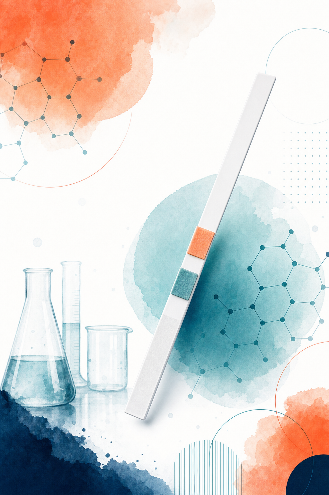
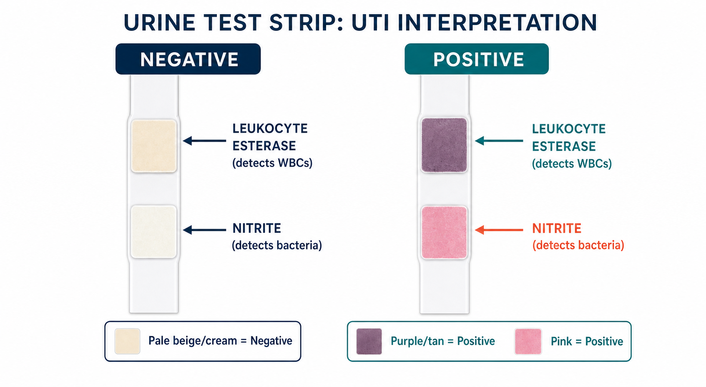

Key Takeaways
- AZO Test Strips use two chemistry pads — leukocyte esterase to detect white blood cells and nitrite to detect Enterobacteriaceae — in a 3-strip OTC pack sold at major pharmacies for roughly $10–$13.[7]
- The leukocyte esterase pad carries sensitivity of 75–96% and specificity of 94–98% by AAFP-reviewed guidelines; the nitrite pad is highly specific (85–98%) but less sensitive (45–60%) in published meta-analyses.[1][2]
- False-negative results are well-documented for Staphylococcus saprophyticus, Enterococcus, and other organisms that do not reduce nitrates — making a negative strip result unable to fully exclude a UTI in a symptomatic patient.[3]
- Current IDSA and EAU guidelines support dipstick testing as a rapid first screen but call for urine culture before antibiotics in recurrent UTI, treatment failure, pregnancy, atypical symptoms, and all men.[5][6]
- A positive home dipstick result, combined with classic UTI symptoms, can support same-day care through either telehealth or an in-person provider; either path can produce guideline-concordant antibiotic treatment.[10]

Why Patients Reach for a Home Test Strip
Urinary tract infections are among the most common bacterial infections worldwide, with roughly half of all women experiencing at least one in their lifetime. In the United States alone, UTIs account for an estimated 10 million clinic visits per year — and many more cases that are managed at home or left untreated while patients wait for appointments.[5]
That gap between symptom onset and a physician visit is where OTC UTI test strips have found their place. When you wake up at 2 a.m. with burning urgency and pelvic pressure, reaching for a $10 test strip before calling a clinic makes practical sense. AZO Test Strips, one of the most recognized products in this category, promise a result in two minutes.
The question worth asking is: what does that result actually mean? A positive reading is not a diagnosis. A negative reading is not clearance. Understanding what the chemistry detects — and where it falls short — is the difference between a useful screening tool and a false sense of certainty in either direction.
This review walks through the science behind the strips, what the published evidence says about their accuracy, who should and should not rely on them, and what to do with the result once you have it.
What This Test Is
Strip Chemistry: Two Pads, Two Signals
Each AZO Test Strip carries two chemically treated pads that react with substances in your urine. They are read independently, and the result of each matters for different reasons.[7]
The leukocyte esterase pad detects an enzyme released when white blood cells (leukocytes) break down in urine. Pyuria — the presence of elevated white blood cells in urine — is one of the body's standard responses to infection or inflammation in the urinary tract. When your immune system sends neutrophils to fight bacteria in the bladder, those cells eventually lyse, releasing leukocyte esterase into the urine at measurable concentrations. A color change from pale beige to tan or purple indicates a positive read.
The nitrite pad works on a different principle. Certain bacteria — primarily Gram-negative Enterobacteriaceae like Escherichia coli, which causes around 80% of uncomplicated UTIs — carry an enzyme called nitrate reductase. That enzyme converts dietary nitrates (which are normally present in urine) into nitrites, which are not. Any detectable pink coloring on the nitrite pad signals bacterial activity specifically from nitrate-reducing organisms.
Product Specifications
AZO Test Strips come in a 3-strip pack, stored in an airtight foil pouch that serves as the color comparison chart. The testing process takes one to two seconds of urine stream contact, followed by a one-to-two minute wait before reading. The color chart on the foil pouch shows the reference blocks for each pad — nitrite positive appears as any uniform pink, while leukocyte positive ranges from dark tan to purple.[7] Strips should be stored at room temperature, away from humidity, and used before the printed expiration date. The product is not recommended for use in children.
FDA Regulatory Status
OTC urine dipstick test strips for UTI detection are regulated as Class II in vitro diagnostic devices by the U.S. Food and Drug Administration. They require 510(k) premarket notification clearance — meaning the manufacturer must demonstrate substantial equivalence to a previously cleared predicate device — and are classified as CLIA-waived for consumer home use. They are also eligible for reimbursement through HSA and FSA accounts.[8]
The Evidence
Dipstick urinalysis has been studied across dozens of clinical populations over three decades. The data are consistent enough to draw clear conclusions, and those conclusions are more qualified than most product marketing suggests.
Sensitivity and Specificity: What the Numbers Mean
A 2024 systematic review published in Clinical Microbiology Reviews pooled data from multiple studies examining nitrite and leukocyte esterase performance.[1] Across those studies, nitrite sensitivity ranged from 45 to 60% — meaning a nitrite-positive result occurs in fewer than two-thirds of confirmed UTIs. Specificity held much higher at 85 to 98%, so a pink nitrite pad is a reliable signal when it appears. The leukocyte esterase pad showed higher sensitivity (48–86%) with more variable specificity (17–93%), depending on population, specimen handling, and whether the urine was properly concentrated.
The AAFP's clinical guidance, grounded in systematic reviews covering over 12,000 patients, adds context.[2] When both pads are negative simultaneously, the odds of a UTI drop by roughly 40 to 60%. That is useful but not definitive — some symptomatic infections will still be missed. The University of Michigan's evidence-based guideline estimated leukocyte esterase at 75 to 96% sensitive and 94 to 98% specific, numbers that reflect performance under controlled collection conditions.
A study of 635 culture-positive patients in the Journal of Family Medicine and Primary Care found nitrite alone identified only 23.3% of confirmed infections, while leukocyte esterase alone identified 48.5%.[3] When both pads are considered together, combined sensitivity climbs to 68–88% in pooled analyses — better, but still leaving a meaningful proportion of true infections undetected.
Real-World False Negatives
Two failure modes deserve attention. Staphylococcus saprophyticus is the second most common cause of UTI in young women after E. coli. It does not reliably produce nitrate reductase, which means the nitrite pad will often read negative even in an active infection. The same applies to Enterococcus, Candida, and some Streptococcal species.[3]
Low bacterial count is another issue. Standard dipstick chemistry is calibrated for bacteriuria at 105 colony-forming units per milliliter. Research shows that symptomatic infection can occur at lower counts, particularly in women with early-stage UTI, and the strip may read negative despite genuine bacterial presence.[5] Urine that has not dwelled in the bladder for at least four hours may also produce a false-negative nitrite reading because there has not been enough time for nitrate conversion.
Evidence Comparison Table
| Test Method | Sensitivity | Specificity | Cost (approx.) | Turnaround |
|---|---|---|---|---|
| Home dipstick (both pads)[1] | 68–88% | 85–98% | $3–5 per strip | 2 minutes |
| Clinic urinalysis (dipstick + microscopy)[2] | 75–96% | 94–98% | $20–50 | 15–30 minutes |
| Urine culture (gold standard)[5] | ~95%+ | ~99% | $50–200 | 24–72 hours |
| Urgent care visit (uninsured)[9] | Variable | Variable | $100–350 | Same day |

Buyer's Guide
When AZO Test Strips Are a Reasonable Choice
The strips make the most sense when you are an otherwise healthy, non-pregnant woman with classic lower urinary tract symptoms — burning with urination, increased frequency, urgency — and no fever or back pain. If you have had UTIs before and recognize this pattern, a home test can give you useful preliminary information before deciding whether to contact a provider and through which channel.
They are also reasonable as a monitoring tool for people managing recurrent UTIs under physician guidance, or when you want to confirm a working diagnosis before paying for a clinic visit.
When to Consider Alternatives or Skip the Strip
The strips are not designed for men, pregnant women, or patients with complicated UTI histories. Male UTIs warrant urine culture and in-person evaluation because urinary anatomy makes them more likely to reflect structural or prostate-related pathology. Pregnancy requires confirmed diagnosis and culture-guided treatment to protect both the patient and the fetus.
Postmenopausal women and immunocompromised patients also fall outside the straightforward scenario the strips perform best in. Atypical organisms, altered immune responses, and higher baseline white blood cell counts in urine can skew results in either direction.
Red Flags That Require More Than a Dipstick
Do Not Rely on the Strip If:
You have fever above 101°F (38.3°C), chills, flank or back pain, nausea or vomiting, visible blood in the urine, or symptoms lasting longer than seven days. These patterns suggest upper urinary tract involvement or another serious condition. Seek in-person care promptly in any of these situations, regardless of what the strip shows.
Where to Buy
AZO Test Strips are available without a prescription at CVS, Walgreens, Target, Walmart, and Amazon, typically in a 3-strip pack for $10–$13. The strips are HSA/FSA eligible. No product link or coupon is included here — pricing and availability vary by retailer and location.
Brief Comparison with Alternatives
| Product | Pads Tested | Pack Size | Availability | Notes |
|---|---|---|---|---|
| AZO Test Strips | LE + Nitrite | 3 strips | Wide (CVS, Walgreens, Amazon, Target) | Most recognized brand; foil pouch color chart |
| Utiva UTI Test Strips | LE + Nitrite | 3 strips | Online (Amazon, utiva.com) | Similar chemistry; packaged with app support option |
| Easy@Home Strips | LE + Nitrite | 25–100 strips | Amazon primarily | Lower cost per strip for frequent monitoring |
| Stix UTI Tests | LE + Nitrite | 3 strips | Online + select retailers | Includes pH wipes for cleaner catch |
| ScanWell (discontinued) | LE + Nitrite + others | — | No longer available | App-based reading; product discontinued |
Reading Your Result
When Both Pads Are Negative
Both pads remaining pale — no pink on the nitrite pad, no color change on the leukocyte pad — suggests the markers the test detects are absent. This does not rule out a UTI. Research shows that a combined negative result reduces the odds of UTI by roughly 40 to 60%, but infections caused by nitrite-negative organisms (like S. saprophyticus or Enterococcus), or early infections with low bacterial counts, can produce a fully negative strip with a confirmed infection on culture.
If your symptoms are clear and persistent — especially burning, frequency, and urgency without fever — a negative strip result should not close the conversation. Contact a provider. You may still have a UTI that requires a culture to identify.
When One or Both Pads Are Positive
Any uniform pink on the nitrite pad is a positive result. The leukocyte pad reads positive when it shifts from pale to tan or purple. A positive on either pad in the presence of classic UTI symptoms increases the clinical likelihood of an active infection.[2]
Both pads positive together is the strongest signal the test can give. A positive nitrite with a negative leukocyte pad still suggests UTI. A positive leukocyte pad with a negative nitrite pad is more ambiguous — leukocyte esterase can be elevated for non-infectious reasons including vaginal contamination, inflammation, or kidney conditions. Current guidance recommends repeating the test or contacting a provider rather than assuming infection based on leukocyte elevation alone.[7]
The Bottom Line on Test Reliability
These strips are a screen, not a diagnosis. Current evidence treats them as a rapid first step that can raise or lower your pre-test probability of infection — not a substitute for clinical evaluation. A positive result in a symptomatic patient warrants same-day care. A negative result in a symptomatic patient warrants a provider contact, not reassurance.
Next Steps After a Positive Result
A positive home dipstick result paired with classic UTI symptoms — burning urination, frequency, urgency — is enough clinical information to prompt same-day care. You have two equally valid paths.
Telehealth Visit
- Same-day or evening appointment with a board-certified physician via secure video
- Physician takes a structured history, reviews your strip result, and assesses red flags
- E-prescription sent directly to your pharmacy if antibiotic treatment is appropriate
- Lab order for urine culture can be placed remotely and collected at a nearby lab
- Typical cost: $49–$80 without insurance; no travel required
- Appropriate for uncomplicated presentations, no fever, no flank pain
In-Person Care
- Primary care provider (PCP) — often the most cost-effective option if you have an established relationship
- Urgent care clinic — walk-in, no appointment needed, typically same-day
- Women's health clinic — may offer on-site urinalysis and culture collection
- Planned Parenthood — provides UTI evaluation and treatment at many locations
- CVS MinuteClinic / Walgreens Health — pharmacy-based NP visits for straightforward presentations
Both paths can result in a guideline-appropriate antibiotic prescription. New 2026 clinical guidance on telehealth UTI care confirms that empiric antibiotic treatment — prescribing based on symptoms and clinical assessment without waiting for culture — is appropriate for otherwise healthy women with classic UTI symptoms, whether that assessment happens in person or over video.[10]
Share your home test result with whoever evaluates you. A positive strip in the context of your symptoms is useful clinical information, even if the provider will confirm it with a dipstick or microscopy in-office. If a urine culture is ordered, collect the specimen before starting antibiotics whenever possible — antibiotics can sterilize the sample and produce a false-negative culture even when an infection was present.
When the Test Is Not Enough
There are clinical scenarios where a home dipstick — positive or negative — does not provide sufficient information to guide your care safely, and where an in-person evaluation is the right call.
Seek In-Person Care Promptly If You Have:
- Fever at or above 101°F (38.3°C) — possible kidney involvement or systemic infection
- Flank pain, back pain, or costovertebral angle tenderness — pyelonephritis warning signs
- Nausea, vomiting, or inability to take fluids
- Visible blood in urine (gross hematuria)
- Symptoms lasting longer than seven days or worsening despite prior antibiotics
- Known or suspected pregnancy
- Diabetes, immunosuppression, or recent urologic procedures
Men should not rely on a home UTI test strip as their primary diagnostic tool. Male UTIs are considered complicated by definition, carry a higher risk of prostate involvement, and require urine culture and in-person assessment to determine appropriate treatment duration and follow-up.[5]
Pregnant women need confirmed diagnosis with urine culture even when asymptomatic — untreated bacteriuria in pregnancy carries significant risks for both mother and infant. Postmenopausal women may have altered vaginal flora and higher baseline leukocyte levels in urine, which can affect dipstick interpretation in both directions.
Recurrent UTIs — typically defined as two or more confirmed infections in six months or three in a year — warrant a more thorough workup. A home strip tells you something is happening today; it does not explain why infections keep recurring, which organisms are involved, or whether antibiotic resistance is developing. That conversation belongs in a clinical setting with culture data in hand.
Bottom Line
AZO Test Strips offer a fast, affordable first look at what may be happening in your urinary tract. The leukocyte esterase pad is a reliable indicator of pyuria when positive; the nitrite pad, when pink, is a strong signal of Gram-negative bacteriuria. Used together in a symptomatic patient, the strips can meaningfully raise or lower the likelihood of infection.
The limitations are real and documented. A negative result does not exclude a UTI. Organisms like Staphylococcus saprophyticus routinely produce false-negative nitrite readings. Low bacterial count, dilute urine, and short bladder dwell time can undermine accuracy further. The strips were designed as a screen, and that is the appropriate frame for interpreting them.
Used correctly — as a first data point in a symptomatic woman with no red flags — they add value. Used as the final word on whether you do or do not have a UTI, they can mislead. The sensible approach is to treat a positive result as a prompt to seek care that same day, and to treat a negative result in a symptomatic patient the same way.
References
- Moreland RB, Brubaker L, Tinawi L, Wolfe AJ. "Rapid and accurate testing for urinary tract infection." Clinical Microbiology Reviews. 2024;38(1):e00046-24. https://pmc.ncbi.nlm.nih.gov/articles/PMC11905368/
- Simati B, Kriegsman W, Safranek S. "Dipstick Urinalysis for the Diagnosis of Acute UTI." American Family Physician. 2013;87(10):online. https://www.aafp.org/afp/2013/0515/od2
- Mambatta AK, et al. "Reliability of dipstick assay in predicting urinary tract infection." Journal of Family Medicine and Primary Care. 2015;4(2):265–268. https://pmc.ncbi.nlm.nih.gov/articles/PMC4408713/
- Gurung R, et al. "Efficacy of Urine Dipstick Test in Diagnosing Urinary Tract Infection." Diseases. 2021;9(3):62. https://pmc.ncbi.nlm.nih.gov/articles/PMC8482205/
- Gupta K, et al. "Guidelines for the Prevention, Diagnosis, and Management of Urinary Tract Infections." JAMA Network Open. 2024;7(11):e2441867. https://jamanetwork.com/journals/jamanetworkopen/fullarticle/2825634
- European Association of Urology. "EAU Guidelines on Urological Infections." 2026. https://uroweb.org/guidelines/urological-infections/chapter/the-guideline
- AZO Test Strips — Product Information. Monthly Prescribing Reference (EMPR). https://www.empr.com/drug/azo-test-strips/
- U.S. Food and Drug Administration. 510(k) Premarket Notification — K103037 (UTI Test Strips, OTC). https://www.accessdata.fda.gov/scripts/cdrh/cfdocs/cfpmn/pmn.cfm?ID=K103037
- GoodRx. "Can I Go to Urgent Care for a UTI?" 2025. https://www.goodrx.com/conditions/urinary-tract-infection/can-i-go-to-urgent-care-for-a-uti
- Telehealth.org. "New UTI guidance targets telehealth prescribing, triage decisions." 2026. https://telehealth.org/news/new-uti-guidance-targets-telehealth-prescribing-triage-decisions/